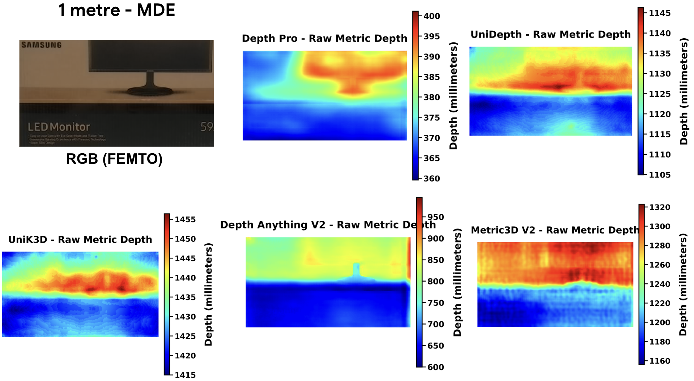
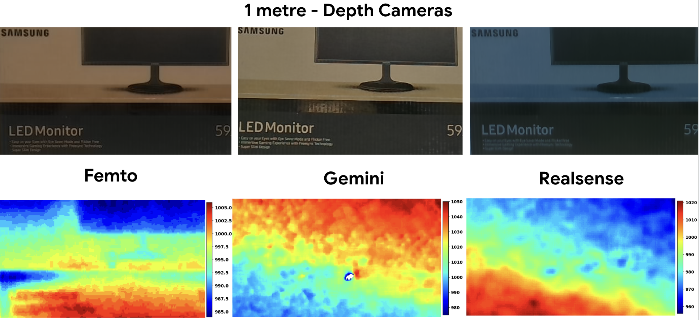

Benchmark RGB-D datasets are foundational to a multitude of Computer Vision (CV) tasks, including object recognition, semantic segmentation, and 3D structure estimation. While standard tasks often rely on the global structure of depth maps and are resilient to minor inaccuracies, applications requiring strict millimeter-scale fidelity, such as precise robotic grasping, close-range navigation, and clash detection in renovation planning, demand reliable structural constraints. This paper presents a rigorous empirical evaluation of the real-world macroscopic accuracy of three widely adopted depth sensing modalities (Orbbec Femto Mega, Orbbec Gemini 336, and Intel RealSense D435f). Crucially, we expose a significant vulnerability in state-of-the-art Metric Monocular Depth Estimation (MMDE) models, demonstrating how these algorithms predict surprisingly different metric depths when applied to RGB inputs from different hardware sensors capturing the exact same scene — a phenomenon we term Cross-Sensor Bias. Using physically constrained, point-wise tape-measured ground truth, we quantify hardware-level versus algorithmic depth estimation errors and highlight distinct systematic error typologies (such as mixed- pixel edge artifacts and material-dependent depth biases). Finally, to mitigate these cross-sensor measurement biases, we propose DepthCal, a computational, per-sensor scale-shift calibration pipeline, providing the metrically consistent and unbiased foun- dation necessary for deploying commercial depth hardware and MMDE models in precision visual tasks.
The proposed benchmark is a multi-camera RGB-D dataset designed to evaluate the metric accuracy of commercial depth cameras and monocular metric depth estimation (MMDE) models under controlled real-world conditions. Unlike conventional RGB-D datasets that primarily support perception tasks such as segmentation or object detection, this dataset focuses on millimetre-level depth accuracy, enabling quantitative evaluation of structural fidelity. The dataset contains synchronized captures from multiple RGB-D cameras observing identical scenes together with physically measured ground-truth depth obtained using tape measurements.
Example: an object at 1 metre, same RGB frame, run through five MDE models.

Fig. — Raw metric depth predictions from five state-of-the-art MDE models for the same RGB image.
Example: the same object at 1 metre captured directly by the three depth cameras.

Fig. — Even raw hardware depth (no MDE involved) shows differing noise patterns and value ranges across Femto, Gemini, and RealSense.
The full dataset includes, for each of the 3 cameras: